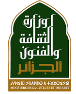
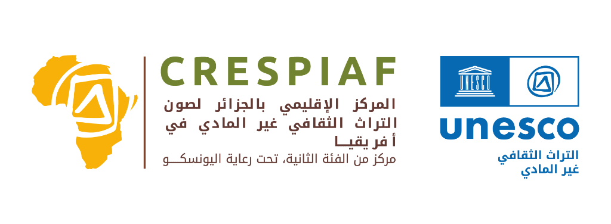
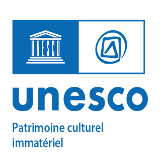
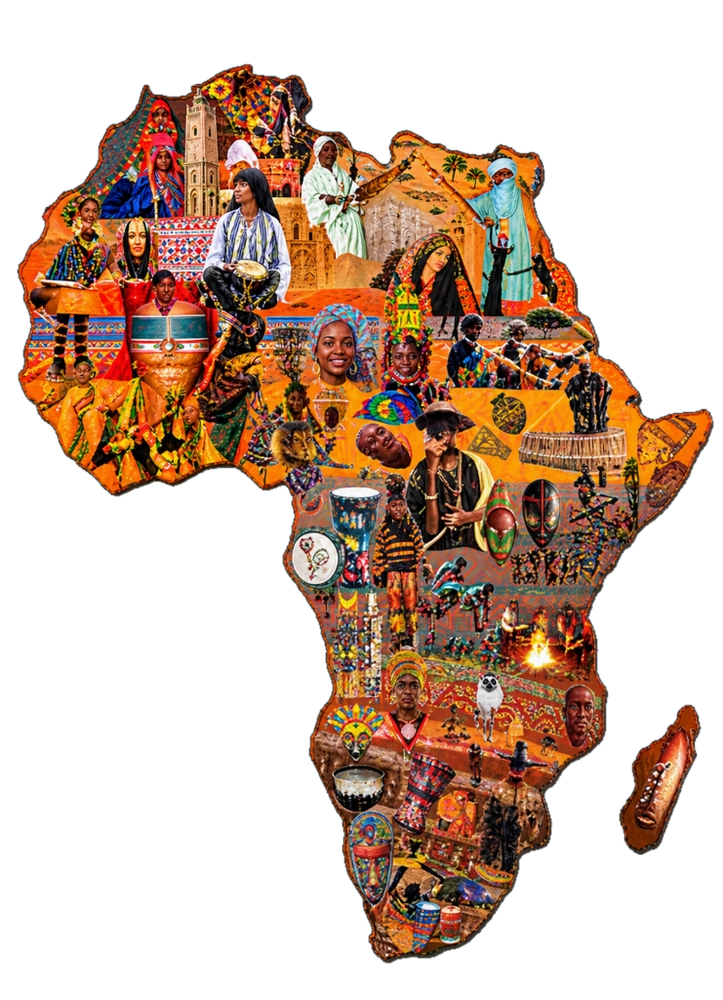

المركز الإقليمي بالجزائر لصون التراث الثقافي غير المادي في إفريقيا
بالتعاون مع منظمة اليونسكو • وبدعم من مركز CNRPAH
من 09 إلى 11 نوفمبر 2026
ورشة إقليمية لتعزيز القدرات
لفائدة نقاط الاتصال الوطنية الإفريقية في مجال إعداد التقارير الدورية، في إطار اتفاقية 2003 لصون التراث الثقافي غير المادي

ورشة إقليمية لتعزيز القدرات • 09-11 نوفمبر 2026
اختر لغة البث والترجمة
Veuillez choisir la langue / Select your language
اللغة العربية
البث المباشر والترجمة الفورية باللغة العربية
مشاهدة
Français
Diffusion en direct et interprétation en français
Accéder
English
Live stream & simultaneous interpretation
Watch